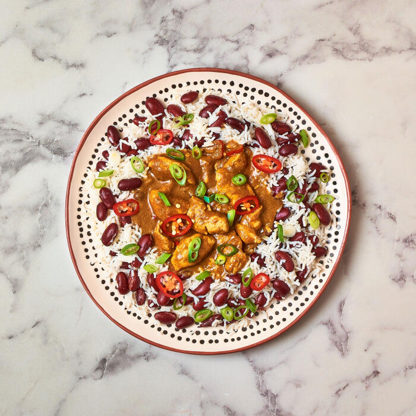

Jamaican Chicken Stew
Serves 4
| Preparation Time |
Cooking Time |
Cuisine |
15 Mins |
15 Mins |
Caribbean |
Preparation Time: The time is takes to prepare and set the kitchen mise en place to begin cooking and is an estimate based on average home cooking skills
Cooking Time: The actual time it takes to cook the raw ingredients to be table ready!

Description
For this Jamaican-inspired dish you'll pan-fry diced British chicken breast in a rich mix of spices, then stir through coconut cream to make a deliciously satisfying chicken stew. Served with speedy rice & beans and sliced fresh red chilli to turn up the heat – yum!
Ingredients
The below ingredients are divided into the different cooking stages to help you organise on your worktop
Preparation
- Red Chili - 1
- Chicken Breast - 250g
- Soy Sauce - 15ml
- Curry powder - 1/2 tbsp
- Ground coriander - 1 tsp
- Creamed coconut - 50g
- White long grain rice - 280g
Garnish
These will be sprinkled over the top of your dish
Sides
These are pre-made sides you can get at the supermarket or deli counter. They pair well with this dish!
Cooking
These are the items you'll need when you get to the cooking stage of the recipe
- 2 tablespoons of Canola or Sunflower oil
- White long grain rice
- Red kidney beans - 390g (drained)
Instructions
The steps are divided into the preparation stage and cooking stage as you will find in real kitchens. First you set the mise en place with all of your ingredients ready to cook and any garnishes. Then you will start the second stage of cooking. This keeps the process orderly and avoid multitasking. The preparation stage includes some cooking of starches that require only time and no continuous monitoring or agitation.
Preparation
- Peel and finely chop your spring onion and set aside in one bowl this is garnish
- Peel and finely chop your red chili and portion evenly into two bowls. One for cooking and one for garnish
- Combine your curry powder, all spice and ground coriander in a small bowl and set aside
- Drain and rinse your kidney beans
- Create your stock by dissolving your creamed coconut and soy sauce in 400ml of boiling water
- Dice your chicken into cubes and set aside
- Once rice has cooked, remove from heat, fluff with a fork and vent
- Gather your garnish bowls and put them in your serving area
- All ingredients are now prepped, starch is cooked, ready to move onto the cooking phase
Cooking
This recipe cooking we will break down into the starch stage and sauce stage
Rice
- Combine your rice, 200ml of water and your drained kidney beans in a pot. Bring to the boil uncovered
- Once boiling, reduce to a low heat and cover with a small vent
- The rice will be cooked in 12-15 minutes, once done, fluff and remove from heat
Sauce
- Add the oil to a hot saucepan
- Once hot, fry the diced chicken breast
- Add half of the red chilli (can't handle the heat? Go easy!) with the curry powder, ground allspice and ground coriander and cook for 1-2 min further
- Add the stock and reduce the heat. Once the pan reaches a low simmer. Stir often until sauce has thickened to your liking
- Once sauce has thickened, remove from heat and service with your cooked rice and top with your garnishes
Home